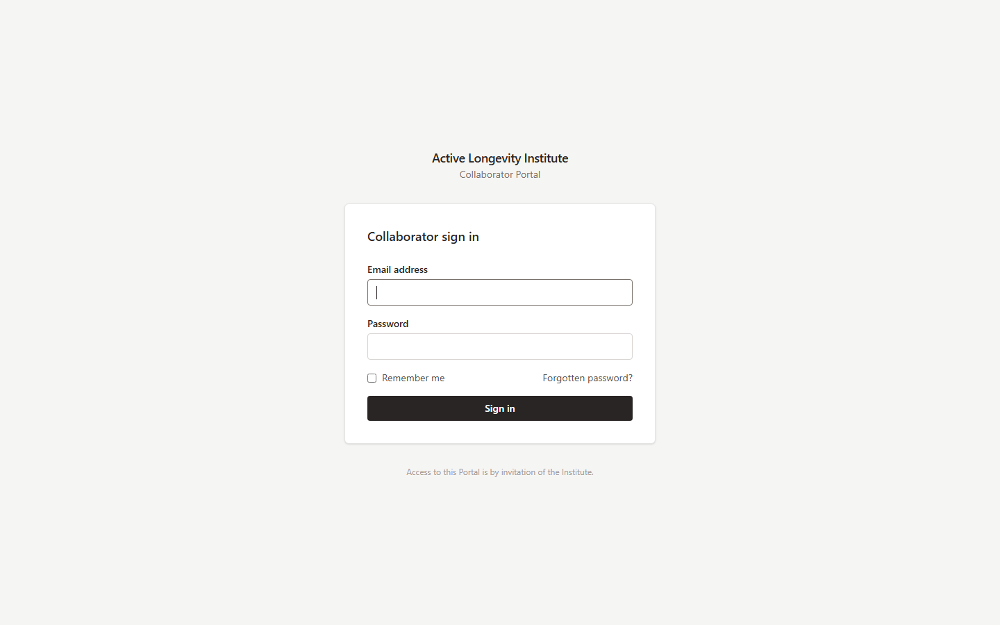
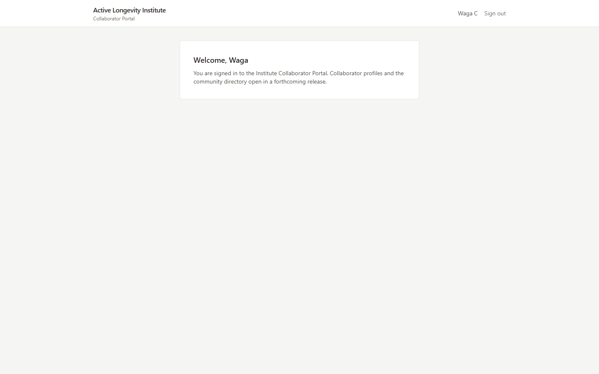
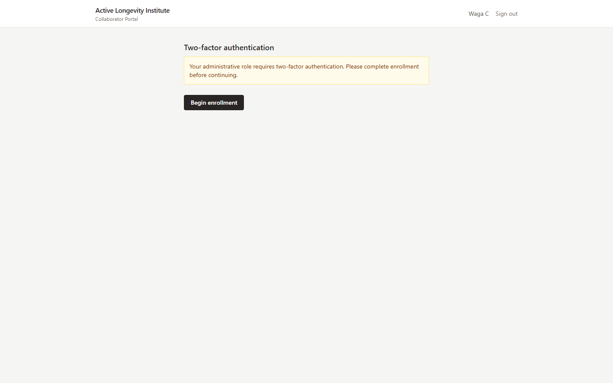
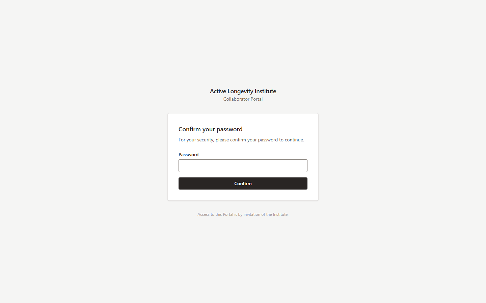

Milestone 1 Delivery — Foundation & Identity · Waga C, Pronto Digital · August 2026
Milestone 1 establishes the architecture the Portal will be built on for the next ten years, and the identity and security layer everything else depends on. It is delivered running on the Institute's own infrastructure, under the Institute's own accounts, exactly as committed in the proposal.
| Environment | Address | Deployment |
|---|---|---|
| Staging | http://167.71.98.53 | Automatic on every approved change, via the continuous-integration pipeline |
| Production | http://167.99.63.85 | Manual, from release tag m1.0, after staging verification |
Friendly web addresses (portal.activelongevityinstitute.org) and certificates attach in the DNS step scheduled with the Institute; the systems themselves are complete and serving.
| Committed in the proposal (M1) | Status |
|---|---|
| Institute-owned repository with continuous integration | Delivered — every change runs code style, static analysis, a dependency security audit, database migrations and the full test suite against PostgreSQL 16 before it can merge |
| Staging and production environments | Delivered — both live on the Institute's DigitalOcean account (~$33/month, inside the estimate) |
| Complete data model for the full domain, not only Phase 1 | Delivered — identity, roles/permissions, applications, referrals, decisions, invitations, collaborators, profiles with structured CV sections, expertise vocabulary, organisations, consent and data-request records, audit stream, email delivery log |
| Authentication, password management and reset, secure sessions | Delivered — with rate limiting and protection against account enumeration; the membership list stays confidential |
| Multi-factor authentication for administrators | Delivered — mandatory: an administrator cannot reach any administrative page until enrollment is complete (screenshots below) |
| Role and permission framework | Delivered — roles and permissions are data, not code; future reviewer or staff roles are configuration, verified by an authorization test matrix |
| Email infrastructure | Foundation delivered — every outbound message is logged with per-message delivery status; test sends reach the provider correctly. Production sending switches on with the DNS/domain step, before any real invitation |
| Backups and a performed restore | Delivered and rehearsed — see section 4 |
| Architecture documentation and decision records | Delivered — nine architecture documents, five operations guides, and nine numbered decision records live in the repository |
The automated suite — 43 tests, 109 assertions, all passing — locks in the guarantees that matter institutionally:
A live backup of the staging database was restored into a clean database and
compared: every table matched the source exactly. The restored copy was then
deliberately attacked — an attempt to alter the audit history — and the database
refused: audit_events is append-only: UPDATE is not permitted.
Institutional history survives disaster recovery still un-rewritable.

Staging — the collaborator sign-in page, live.

Production — the same release, deployed from tag m1.0.

Signed in as an administrator account.

The same administrator attempting to open the administrative area — redirected to two-factor enrollment. The wall is enforced by the server, not the interface.

Beginning enrollment requires re-confirming the password — defense in depth.
github.com/ActiveLongevityInstitute/active-longevity-portal — the Institute's organisation, from the first commit.docs/ — architecture (01–09), decision records (ADR-001–009), deployment, operations runbook, configuration, database, security.On this foundation, Milestone 2 delivers the Institute's core operational workflow end to end: invitations, the referral form, the website application form, the administrative review queue, and registration — culminating in a live demonstration of a complete admission from application to admitted collaborator.